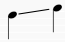
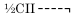
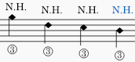
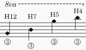
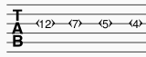

Guitar techniques
Adding a tremolo bar symbol to your score
Tremolo bar symbols are available from the Guitar palette (look for the oversized "V") and are applied and adjusted in a similar way to bend symbols (above)—with a similar graphical interface in the "Tremolo" bar section of Properties.
You can choose from a range of presets in "Tremolo bar type", or create your own custom one.
Adding a slide to your score
Slides can be found in the Arpeggios and glissandi palette. They are of two types:
- Glissando-type slides: these run from one note or chord to the next.\

- In / Out slides: played before or after a note; these can be slide-up or slide down.\
By default, slides have a playback effect on the score. You can turn this off by unchecking "Play" in the General section of the Properties panel.
Add a slide
Use one of the following methods:
- Select one or more notes as start points, then click the desired slide icon in the palette.
- Drag the desired slide from the palette onto a note.
In the case of in-between slides going from one chord to the next, the program will attempt to link the correct notes where possible. If further adjustment is required, see below.
Edit properties
For in-between slides, the following properties can be adjusted in the Glissando section of the Properties panel.
- Type: Choose between Straight or Wavy.
- Show text: Tick this box to display text. Note: If there isn't enough room between notes, the text is not displayed.
- Text: The wording displayed above the slide (if any).
Adjust start and end points of a slide
In-between slides:
To move an end handle vertically or horizontally, from one note to the next:
- Select the slide.
- Click on the start or end handle.
- Hold Shift and press an arrow key (Up, Down, Left or Right) to move the handle to the nearest note in that direction.
Slides in/out:
To adjust the position of the end handle:
- Select the slide.
- Click on the adjustment handle.
- Drag the handle, or use the keyboard arrows.
Adding a barre line to your score
A Barre lines is a text-line drawn above a guitar staff to indicate that the passage requires a full or half barre. Symbols such as the following are commonly found in guitar music:
Full bar (2nd fret):\

Half barre (2nd fret):\

The C before the roman numerals can be omitted and other variations in line style and text are possible—according to the publisher.
To apply a barre:
- Click on the start note for the barre, then shift click on the end note to establish the range.
- Click on the "Capo Line" symbol in the Guitar palette.
- Customize the line and text as required. See Line properties (Other lines).
To adjust the length of a line, see Changing range of a line.
Adding hammer-on and pull-off symbols to your score
Hammer-ons and pull-offs are notated by slurs. If you need text annotations as well, create them using staff text; they can be saved to a palette for future use (see Adding elements from your score).
Notating harmonics
Standard staff
A natural harmonic can be notated in one of three ways:
- At the pitch of the open string on which it is produced. For example, harmonics on the third string appear as:\

- At the pitch of the string fret at which it is produced. The same harmonics now appear as:\

- At concert pitch. The same harmonics now appear as:\

An annotation, such as "Nat. Har.", "N.H.", "Har.", is usually attached, as well as string and fret numbers; the notehead may be standard or diamond-shaped, and rendered clear rather than black; fret numbers may be Arabic or Roman, and so on.
Fixing Playback: If harmonics do not play back at the correct pitch, mute them and create a hidden voice containing the harmonics at concert pitch.
See also, How to Read Harmonic Notation on the Classical Guitar (douglasniedt.com).
Tablature
A natural harmonic in tablature may be rendered simply as a fretmark, or may be followed by a dot, or enclosed in a diamond, or a pair of angled brackets. e.g.

To create a pair of angled brackets:
- Select a harmonic and add staff text.
- Enter a "single left-pointing angle quotation mark" (U2039), then a space, then a "single right-pointing angle quotation mark" (U203A).
- Move the text so it sits over the fretmark;
- Adjust the font size of the staff text and the space inside it to just enclose the harmonic.
- Save it to a palette for future use.
Staff/Tablature pairs
You should ensure that the staff/tab pairs are not linked, since you need to be able to edit each staff independently of the other.
Notating guitar fingering
The types of guitar fingering and how to apply them are explained in Fingering.
Adding a bend symbol to your score
Not to be confused with brass or woodwind instrument bends.\ This section shows old instructions for using Bends in MuseScore 4.0 to Musescore 4.1. For users of MuseScore 4.2 and above versions, see the Guitar bends chapter.
Apply a bend
Bends are created with the Bend Tool located in the Guitar palette. To apply one or more bends to the score, use one of the following options:
- Select one or more notes and click the bend symbol in the palette.
- Drag the bend symbol from the palette on to a note.
A default bend is created in the score. You can modify this bend or choose from a range of alternatives using “Bend type” in the Bends section of the Properties panel.
Edit a bend
Bend shape and length can be edited in the graphical display in the Bends section of the Properties panel:

Each red line segment between blue nodes represents one step in the bend, and each step extends horizontally for 1 sp. in the score. The slope of any line shows whether it is an up-bend, a down-bend or a hold. So the above graph describes an up bend, then a hold—total length 2sp.
The vertical axis of the graph represents the amount by which the pitch is bent up or down: one unit (the side of a small square) equals a quarter-tone, 2 units a semitone, 4 units a whole-tone, and so on.
To add another step to a bend
- add another node by clicking on the appropriate line intersection.
To delete a bend step
- click on the relevant node to remove it.
Adjust bend height
The height of the bend is automatically adjusted so that any text appears just above the staff. This height can be adjusted, if necessary, with a workaround:
- Create another note vertically above the note (shortening the height) or below the note (extending the height) at which you want the bend to start.
- Apply the bend to the new note.
- To adjust the height of the bend move this created note vertically so that the bend symbol gets the desired height.
- Drag the bend symbol to the correct position (to the original note).
- Mark the created note invisible and silent (using the Properties panel).
Reposition bend
Bends can be freely repositioned using the methods shown in Changing position of elements.